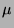
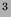
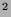
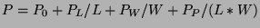

Next: Q: Bipolar Junction Transistor
Up: Circuit description
Previous: L: Inductor
Contents
Subsections
Mxxxxxxx nd ng ns nb mname {args}
Mxxxxxxx nd ng ns nb mname
{width/length} {args}
.MOSfet label nd ng ns nb mname {args}
.MOSfet label nd ng ns nb mname
{width/length} {args}
MOSFET.
Nd, ng, ns, and nb are the drain, gate, source, and
bulk (substrate) nodes, respectively. Mname is the model name.
Length and width are the drawn channel length and width, in
microns. Note that the notation W/L has units of microns, but the same
parameters, in the argument list (W and L) have units of meters.
All other dimensions are in meters.
The options rstray and norstray determines whether or not series
resistances are included. Experience has shown that the effect of series
resistance is usually not significant, it can significantly degrade the
simulation time, and it often increases roundoff errors. Therefore,
norstray is the default. Norstray is the equivalent of
setting the model parameters rd, rs, and rsh all to zero.
Entering a parameter value of 0 is not the same as not specifying
it. This behavior is not compatible with SPICE. In SPICE, a value
of 0 is often interpreted as not specified, with the result being
to calculate it some other way. If you want it to be calculated,
don't specify it.
Another subtle difference from SPICE is that GnuCap may omit some
unnecessary parts of the model, which may affect some reported
values. It should not affect any voltages or currents. For example,
if the gate and drain are tied, Cgs will be omitted from the model,
so the printed value for Cgdovl and Cgd will be 0, which will
disagree with SPICE. It doesn't matter because a shorted capacitor
can store no charge.
Levels 1, 2, 3, 4, 5, 6, 7 are implemented.
- L = x
- Drawn channel length. (Default = DEFL
parameter from options. DEFL default = 100)
- W = x
- Drawn channel width. (Default = DEFW
parameter from options. DEFW default = 100)
- AD = x
- Area of drain diffusion. (Default = DEFAD
parameter from options. DEFAD default = 0)
- AS = x
- Area of source diffusion. (Default = DEFAS
parameter from options. DEFAS default = 0)
- PD = x
- Perimeter of drain junction. (Default = 0.)
- PS = x
- Perimeter of source junction. (Default = 0.)
- NRD = x
- Number of squares of drain diffusion.
(Default = 1.)
- NRS = x
- Number of squares of source diffusion.
(Default = 1.)
- LEVEL = x
- Model index. (Default = 1) Selects which
of several models to use. The choices supported are 1-7,
corresponding to Spice 3f5.
- CMODEL = x
- Capacitance model selector
(Default = 1 for level 4,5,7. Default = 2 for level 1,2,3. Default =
3 for level 6.) The only valid values are 1, 2 and 3. 2 selects
Meyer capacitance calculations compatible with Spice 2. 3 selects
Meyer's model campatible with Spice 3. 1 selects not to use Meyer's
model.
- IS = x
- Bulk junction saturation current. If not input,
it is calculated from JS. If both are input, a warning is
issued, and the calculated value (from JS) is used, if AD
and AS are also input. If neither IS or JS is
input, a default value of 1e-14 is used.
- JS = x
- Bulk junction saturation current per sq-meter of
junction area. May be used to calculate IS. If a conflict
exists, a warning is issued.
- FC = x
- Coefficient for forward bias depletion capacitance
formula. (Default = 0.5)
- PB = x
- Bulk junction potential. (Default = 0.8)
- CJ = x
- Zero bias bulk junction bottom capacitance per
sq-meter of junction area. If not input, but NSUB is, it is
calculated, otherwise a default value of 0 is used.
- MJ = x
- Bulk junction bottom grading
coefficient. (Default = 0.5)
- PBSW = x
- Sidewall Bulk junction potential. (Default = PB)
- CJSW = x
- Zero bias bulk junction sidewall
capacitance per meter of junction perimeter. (Default = 0.)
- MJSW = x
- Bulk junction sidewall grading coefficient.
(Default = 0.33)
- RSH = x
- Drain and source diffusion sheet
resistance. If not input, use RS and RD directly. If a
conflict exists, a warning is issued. The resistance is only used if
the option rstray is set.
- RD = x
- Drain ohmic resistance (unscaled).
If RS is input, the default value of RD is 0. If RD
and RS are both not input, and RSH is input, they are
calculated from RSH. If any conflict exists, a warning is
issued, indicating the action taken, which is believed to be
compatible with SPICE. The resistance is only used if the option rstray is set.
- RS = x
- Source ohmic resistance (unscaled).
If RD is input, the default value of RS is 0. If RD
and RS are both not input, and RSH is input, they are
calculated from RSH. If any conflict exists, a warning is
issued, indicating the action taken, which is believed to be
compatible with SPICE. The resistance is only used if the option rstray is set.
- CBD = x
- Zero bias B-D junction capacitance (unscaled).
If CBD is not specified, it is calculated from CJ.
- CBS = x
- Zero bias B-S junction capacitance (unscaled).
If CBS is not specified, it is calculated from CJ.
- CGSO = x
- Gate-source overlap capacitance, per channel
width. (Default = 0.)
- CGDO = x
- Gate-drain overlap capacitance, per channel
width. (Default = 0.)
- CGBO = x
- Gate-bulk overlap capacitance, per channel
length. (Default = 0.)
- KF = x
- Flicker noise coefficient. SPICE parameter
accepted but not implemented.
- AF = x
- Flicker noise exponent. SPICE parameter accepted
but not implemented.
- VTO = x
- Zero bias threshold voltage. If not input,
but NSUB is, it is calculated, otherwise a default value of 0 is
used.
- KP = x
- Transconductance parameter. If not input, it is
calculated by UO * COX.
- GAMMA = x
- Bulk threshold parameter. If not input,
but NSUB is, it is calculated, otherwise a default value of 0 is
used.
- PHI = x
- Surface potential. If not input, but
NSUB is, it is calculated, otherwise a default value of 0.6 is
used. A warning is issued if the calculated value is less than 0.1,
in which case 0.1 is used.
- LAMBDA = x
- Channel length modulation. If not
input, it is calculated dynamically during simulation. If the value
input is larger than 0.2, a warning is issued, but no correction is
made. (accepted but ignored for level 3)
- TOX = x
- Oxide thickness. (meters) (Default = 1e-7)
- NSUB = x
- Substrate doping. (atoms / cm) Used in
calculation of VTO, GAMMA, PHI, and CJ. If
not input, default values are used.
- NSS = x
- Surface state density. (atoms / cm) (Default
= 0.) Used, with NSUB in calculation of VTO.
- XJ = x
- Metallurgical junction depth. (meters) Used to
calculate short channel effects. If not input, do not model short
channel effects, effectively defaults to 0.
- LD = x
- Lateral diffusion. (Default = 0.) Effective
channel length is reduced by 2 * LD.
- UO = x
- Surface mobility. (cm/V-s) (Default = 600.)
- DELTA = x
- Width effect on threshold voltage.
(Default = 0.) (Level 2 and 3 only.)
- TPG = x
- Type of gate material. (Default = 1.)
+1 opposite to substrate
-1 same as substrate
0 Aluminum
The Level 1 model has no additional parameters.
- NFS = x
- Fast surface state density. (atoms / cm)
Used in modeling subthreshold effects. If not input, do not model
subthreshold effects.
- VMAX = x
- Maximum drift velocity of carriers. (m/s)
Used in calculating vdsat, and lambda. If not input, use a different
method. VMAX does not always work, if the method fails, the
alternate method is used and the warning ``Baum's theory rejected'' is
issued if the error threshold is set to debug or worse.
- NEFF = x
- Total channel charge (fixed and mobile)
coefficient. (Default = 1.) Used in internal calculation of lambda.
- UCRIT = x
- Critical field for mobility degradation.
(V/cm) (Default = 1e4)
- UEXP = x
- Critical field exponent in mobility
degradation. If not input, do not model mobility degradation,
effectively defaulting to 0.
- UTRA = x
- Transverse field coefficient. SPICE
parameter accepted but not implemented. It is also not implemented in
most versions of SPICE.
- NFS = x
- Fast surface state density. (atoms / cm)
Same as Level 2.
- VMAX = x
- Maximum drift velocity of carriers. (m/s)
Used in calculating vdsat. If not input, use a different method.
- THETA = x
- Mobility modulation.
- ETA = x
- Static feedback.
- KAPPA = x
- Saturation field vector.
- KV = x
- Saturation voltage factor.
- NV = x
- Saturation voltage coeff.
- KC = x
- Saturation current factor.
- NC = x
- Saturation current coeff.
- NVTH = x
- Threshold voltage coeff.
- PS = x
- Sat. current modification par.
- GAMMA1 = x
- Bulk threshold parameter 1.
- SIGMA = x
- Static feedback effect par.
- LAMBDA1 = x
- Channel length modulation param. 1.
The BSIM models have additional parameters for length, width, and
product (length * width) dependency. To get the name, prefix the
listed parameter with L, W, or P, respectively. Spice supports the
``P'' parameter only for BSIM3, but GnuCap supports it for all 3 models.
For example, VFB is the basic parameter with units of Volts, and LVFB,
WVFB, and PVFB also exist. The units of LVFB and WVFB are Volts *
micron. The units of PVFB are Volts * micron * micron. The real
parameter is calculated by
,
where L and W are the effective length and width in microns.
The parameter s are not listed here, but they are the same as Spice
3f5, with the same defaults.
The ``levels'' are the same as Spice.
- 4
- BSIM 1.
- 5
- BSIM 2.
- 7
- BSIM 3v3.1.
The following are reserved for future use:
- 8
- BSIM 3v3.2.
- 9
- BSIM-SOI.
- 10
- BSIM 4.
- VDS
- Drain-source voltage.
- VGS
- Gate-source voltage.
- VBS
- Bulk-source voltage.
- VDSInt
- Drain-source internal voltage.
- VGSInt
- Gate-source internal voltage.
- VBSInt
- Bulk-source internal voltage.
- VGD
- Gate-drain voltage.
- VBD
- Bulk-drain voltage.
- VSD
- Source-drain voltage.
- VDM
- Drain-midpoint voltage.
- VGM
- Gate-midpoint voltage.
- VBM
- Bulk-midpoint voltage.
- VSM
- Source-midpoint voltage.
- VDG
- Drain-gate voltage.
- VBG
- Bulk-gate voltage.
- VSG
- Source-gate voltage.
- VDB
- Drain-bulk voltage.
- VGB
- Gate-bulk voltage.
- VSB
- Source-bulk voltage.
- VD
- Drain-ground voltage.
- VG
- Gate-ground voltage.
- VB
- Bulk-ground voltage.
- VS
- Source-ground voltage.
- Id
- Drain current.
- IS
- Source current.
- IG
- Gate current.
- IB
- Bulk current.
- CGSO
- Gate-source overlap capacitance.
- CGDO
- Gate-drain overlap capacitance.
- CGBO
- Gate-bulk overlap capacitance.
- CGSm
- Gate-source Meyer capacitance.
- CGDm
- Gate-drain Meyer capacitance.
- CGBm
- Gate-bulk Meyer capacitance.
- CGST
- Gate-source total capacitance.
- CGDT
- Gate-drain total capacitance.
- CGBT
- Gate-bulk total capacitance.
- CBD
- Bulk-drain junction capacitance.
- CBS
- Bulk-source junction capacitance.
- CGATE
- Nominal gate capacitance.
- GM
- Transconductance.
- GDS
- Drain-source conductance.
- GMB
- Body effect transconductance.
- VDSAT
- Saturation voltage.
- VTH
- Threshold voltage.
- IDS
- Drain-source current, not including strays.
- IDSTray
- Drain current due to strays.
- IError
- Estimated drain current error bound.
- P
- Power dissipation.
- P
- Power.
- PD
- Power dissipated. The power dissipated as heat.
It is always positive and does not include power sourced.
It should be the same as P because the mosfet cannot generate energy.
- PS
- Power sourced. The power sourced by the part.
It is always positive and does not consider its own dissipation.
It should be 0 because the mosfet cannot generate energy.
- REgion
- Region code. A numeric code that represents the region
it is operating in. The number is the sum of several factors. A negative
code indicates the source and drain are reversed.
- 1 Active. (Not cut off.)
- 2 Not subthreshold.
- 4 Saturated.
- 10 Source to bulk is forward biased.
- 20 Drain to bulk is forward biased.
- 40 Punch through.
All parameters of the internal elements (Ids, Gmr, Gmf, Yds, Gmbr, Gmbf,
Cgb, Cgd, Cgs, Dsb, Ddb, Rd, Rs) are available. To access them, concatenate
the labels for the internal element with the diode, separated by a dot.
Cgd.M6 is the gate to drain capacitance of M6.
In this release, there are no probes available in AC analysis except for the
internal elements.
Next: Q: Bipolar Junction Transistor
Up: Circuit description
Previous: L: Inductor
Contents
Al Davis
2001-10-28